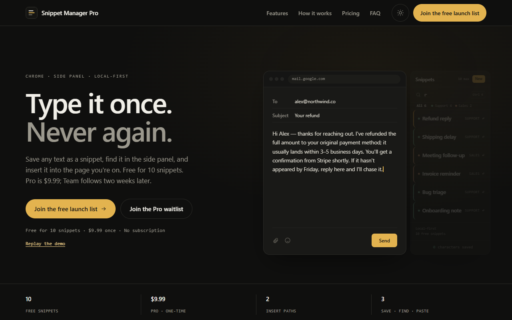
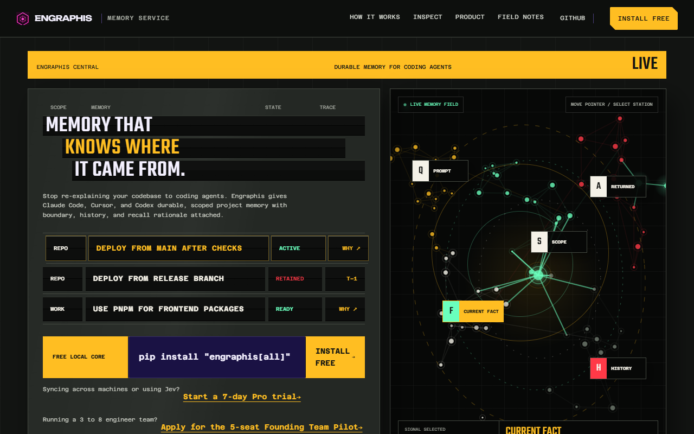

Richmond, KY | Healthcare Operations, Enablement & Technical Support
Healthcare Operations, Enablement & Technical Support Portfolio
Three years full-time remote at Carenet Health supervising up to 80 specialists across 900+ clinical facilities and 200+ CenterWell locations plus six years of regulated Medicaid coordination, paired with hands-on web development, Python/REST API/Zapier automation, Stripe billing QA, and interactive SOP tooling.
Seeking Full-Time Remote W-2 RoleUS Authorized (No Sponsorship)Remote US (Eastern Time) | Immediate Start
Built live web apps, interactive triage tools, Stripe billing workflows, Python & Zapier QA (2025 - Present)
Interactive Proof Workbench & Work Samples
Original, interactive samples built around public healthcare and SaaS operations standards. Internal client, patient, and proprietary Carenet Health records remain strictly confidential.
30-Second Live Proof
Try Three Core Workflows Right Here
Click a synthetic healthcare scenario to generate an audit-ready supervisor handoff note:
[SYNTHETIC CASE - ELIGIBILITY QA] Primary payer portal verified active effective 2026-11-01 (CRM cache showed stale 2026-10-31 term). Confirmed coverage window for clinic coordinator, logged verification timestamp in CRM, and flagged sync lag for Ops review.
Compare an unverified AI draft against the human-audited release standard:
Rejected Raw AI Draft
"Our onboarding SOP cuts ramp time by 42% and guarantees 100% error-free intake. Tell clinics to email patient spreadsheets if the portal lags."
Approved Audit-Ready Release
"Follow the 1-page visual intake guide. If portal sync fails, capture a redacted timestamped screenshot, route via the encrypted queue, and notify your on-duty lead."
Interactive triage and QA calibration playbook covering Medicaid eligibility date mismatches, after-hours clinical warm-handoff confirmation, and prior-authorization completeness audits.
L&D / ADDIEvILT + Job Aid
Remote Onboarding Curriculum & Facilitator Kit
Structured ADDIE (Analyze, Design, Develop, Implement, Evaluate) blueprint, 45-minute live virtual training (vILT) run-of-show, 1-page printable job aid, Loom video script, and interactive 3-question quiz.
SOP & Job AidBranching Tree
High-Stakes Escalation Triage & Warm-Handoff Tree
Interactive 4-step branching job aid showing how distributed specialists audit source records, confirm live receiving owners, trigger secondary escalation paths, and close recurring process gaps.
AI Quality GateLive Checker
AI Content Validation & Live Pre-Release QA Gate
Side-by-side raw draft vs. human-verified diffs, live browser QA gate blocking unverified claims and unsafe privacy shortcuts, Python validation pattern, and 6-gate sign-off checklist.
Self-service API and webhook troubleshooting simulator walking users through HTTP 401/403 scope mismatches, ISO-8601 date errors in Zapier/Python flows, and Stripe webhook signature checks with copyable reply templates.
Client-Side Validator7 Unit Tests
HRIS Identity Lifecycle & Access Review Validator
Client-side Human Resources Information System (HRIS) validator with 1-click defect presets checking join, move, and leave CSV rows against schema and access rules for human review.
Live Web, Documentation & Automation Builds
Automated, low-touch portfolio web properties built to prove the hands-on web delivery, self-service help documentation, Stripe billing QA, and Python/REST API/Zapier automation I bring as a full-time W-2 force multiplier.

Web UX & DocsStripe Billing QASelf-Serve
Snippet Manager Pro (snippetmanagerpro.com)
Text-expansion productivity build designed for support and operations workflows. Demonstrates end-to-end website delivery, plain-English Help Center documentation, Stripe checkout/webhook QA, and automated release checks.

Knowledge SystemPython QA ScriptsSetup Guides
Engraphis (engraphis.com)
Structured knowledge-store web build keeping project conventions, technical decisions, and troubleshooting history inspectable across sessions. Demonstrates technical onboarding docs, release QA, and Python verification automation.
Lightweight verification utilities (including the open-source Jev verification helper) that compress verbose test outputs before human review, guard risky automation steps, and confirm reported QA sign-offs match real recorded execution logs.
Automated QA checks: Python schema, link, accessibility, and claim-verification gates run before publication.
Web & interactive tool delivery: Built and launched three live, automated portfolio web properties (engraphis.com, snippetmanagerpro.com, vpnsecurity.blog) plus browser-based healthcare triage trees, onboarding kits, and QA validators at coding-dev-tools.github.io/portfolio.
Automation, billing & release QA: Owned requirements scoping, release QA, bug reproduction, Stripe checkout and webhook workflows, and Python, REST API, and Zapier automations; all sites run low-touch/self-serve while seeking a dedicated full-time remote W-2 role.
Carenet Health | Point of Contact (POC) and On-Duty Supervisor
Oct 2022 - Sep 2025 | Remote
Remote operations supervision: Served full-time remote as operational point of contact and on-duty supervisor across up to 80 remote specialists supporting 900+ hospitals, physician offices, facilities, and health plans (CalOptima, Texas Children's Health Plan, Molina, Humana, Monument Health), plus 200+ CenterWell locations after hours.
Training, SOPs & escalations: Managed after-hours clinical routing, resolved member-services and payer escalations across Jira, customer relationship management (CRM) platforms, and Epic Health Portal, and authored standard operating procedures (SOPs), decision trees, Loom videos, and Scribe (screenshot guide) training for incoming points of contact and charge nurses.
Technical onboarding & user enablement: Independently supported user activation, workflow configuration, and live troubleshooting across an 11,800+ member SaaS user ecosystem.
Self-service documentation & API support: Authored setup runbooks and FAQs and guided users through REST API key configuration, webhook diagnostics, and product updates.
Access Wireless | Independent Sales Representative / Order Processing
Jan 2016 - Dec 2016 | Richmond, KY
High-accuracy regulated enrollment: Handled 40+ daily compliance-regulated customer orders and eligibility verifications inside CRM workflows under state oversight.
A Brighter Future Inc. | Direct Support Professional, Educator & Medicaid Documentation Specialist
Jan 2012 - Jun 2018 | Kentucky
Multidisciplinary care coordination: Coordinated support routines and care plans alongside physicians, behavioral therapists, occupational therapists, and families across six years in a regulated Kentucky healthcare setting.
Regulated service & billing records: Maintained thorough Medicaid billing records, service authorization documentation, and daily clinical progress notes.
Education, Credentials & Systems
Education & Verified Credentials
Eastern Kentucky University: Completed undergraduate coursework in Computer Science, Communications, Psychology, and Nursing.